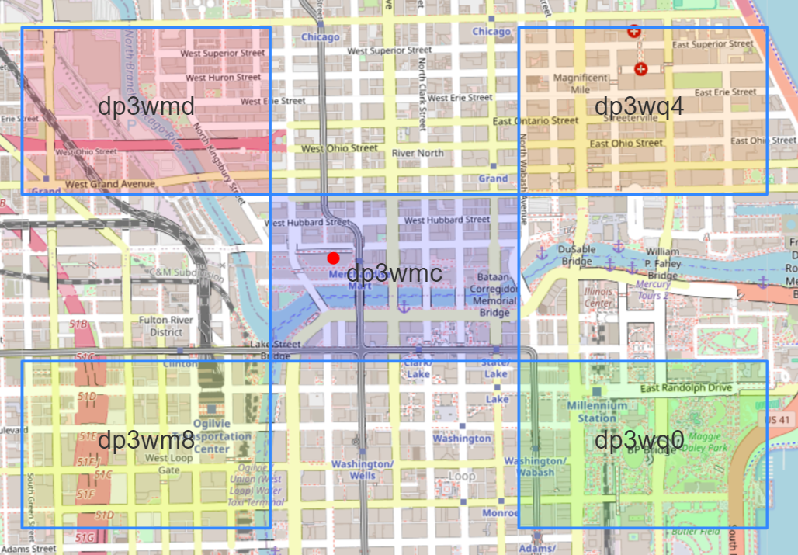
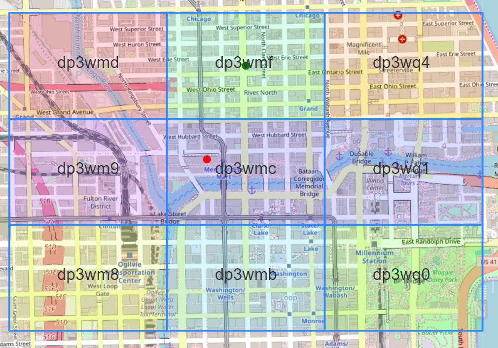

"""
Very inefficient GeoHashing subroutine. For demonstration purposes only.
"""
def get_geohash(lat, lon, precision=12):
"""
Generate GeoHash of lat/lon at specified precision.
Parameters
----------
lat: float
Latitude of point of interest.
lon: float
Longitude of point of interest
precision: int
Precision of GeoHash. Higher values result in
smaller bounding regions.
Returns
-------
geohash, bbox as list
"""
base32 = "0123456789bcdefghjkmnpqrstuvwxyz"
bits = []
min_lat, max_lat = -90, 90
min_lon, max_lon = -180, 180
for ii in range(5 * precision):
if ii % 2 == 0:
# Bisect longitude (E-W).
mid_lon = (min_lon + max_lon) / 2
if lon >= mid_lon:
bits.append(1)
min_lon = mid_lon
else:
bits.append(0)
max_lon = mid_lon
else:
# Bisect latitude (N-S).
mid_lat = (min_lat + max_lat) / 2
if lat >= mid_lat:
bits.append(1)
min_lat = mid_lat
else:
bits.append(0)
max_lat = mid_lat
# Create single bit string from list of 0/1s.
bitstr = "".join([str(ii) for ii in bits])
# Partition bitstr into groups of 5 bits.
quints = [bitstr[(5 * ii):(5 * (ii + 1))] for ii in range(precision)]
# Convert binary digits to decimal digits to get indices into base32.
indices = [int(ii, base=2) for ii in quints]
# Lookup characters associated with each index and concatenate.
geohash = "".join([base32[ii] for ii in indices])
# GeoHash bounding box is just the final, min_lat, min_lon, max_lat, max_lon.
bbox = [min_lat, min_lon, max_lat, max_lon]
return(geohash, bbox)I recently became interested in GeoHashing, and wanted to develop an understanding of the algorithm with the goal of implementing it myself. I was surprised to find it to be quite simple and intuitive. In what follows, I’ll demonstrate how to generate GeoHashes for a given latitude and longitude and compare results against pygeohash, a Python library for all things GeoHash-related. I’ll also walkthrough an approach that can be used to find the neighboring cells of a given GeoHash, and render them on a map.
A Geohash is a unique identifier of a specific region on the Earth. The basic idea is the Earth gets divided into rectangular regions of user-defined size, and each region is assigned a unique id which is called its Geohash. For a given location on earth, the algorithm converts an arbitrary precision latitude and longitude into a string, the idea being that regions with a similar string prefix will be closer together. Conceptually, GeoHashing reduces proximity search to string prefix matching. As each character encodes additional precision, shared prefixes denote geographic proximity. But the converse is not true: Two points may be close in terms of relative proximity, but have no common GeoHash characters (think of two points on opposite sides of the prime meridian).
Geohashes also provide a degree of anonymity since it isn’t necessary to expose exact GPS coordinates. The location of an entity up to a bounding box cell at a given precision is all that is known.
Before we begin, it is important to note that GeoHash libraries in the wild use a much more efficient generating mechanism than what is presented here. My goal is to demonstrate the concept with maximum clarity as opposed to maximum efficiency. If you decide to use GeoHashing in a real-world application, use an existing library.
Algorithm
A GeoHash is a hierarchical spatial index: In order to represent a point, the world is recursively divided into smaller and smaller grid cells with each additional bit until the desired precision is reached. Functionally, the algorithm works by storing the intermediate results of two binary searches. In the resulting bit string, even-indexed bits represent longitude, while odd-indexed bits represent latitude. The user specifies a level of precision, usually between 1 and 12, and a GeoHash of that length is returned. The table below gives the dimensions of GeoHash cells at each level of precision (taken from here):
Precision Dimension
1: 5,000km x 5,000km
2: 1,250km x 625km
3: 156km x 156km
4: 31.9km x 19.5km
5: 4.89km x 4.89km
6: 1.22km x 0.61km
7: 153m x 153m
8: 38.2m x 19.1m
9: 4.77m x 4.77m
10: 1.19m x 0.596m
11: 149mm x 149mm
12: 37.2mm x 18.6mmThe values in the table represent the maximum dimension at each level of precision: As locations move away from the equator, the dimensions of each cell get smaller.
For a GeoHash of length 12, the coordinate can be found in a cell having dimension 37.2mm x 18.6mm, which is an impressive level of precision for a 12 character string!
The GeoHash symbol map consists of 32 characters:
base32 = "0123456789bcdefghjkmnpqrstuvwxyz"base32 consists of digits 0 thru 9 plus all lowercase letters excluding a, i, l, o. As the search space is recursively partitioned, each group of 5 bits, when converted to a decimal integer, maps to one of the values in base32 above.
I’ll present the algorithm first, then walkthrough it step-by-step. What follows is a basic implementation of GeoHashing, which takes as input the latitude and longitude for a point of interest, and returns the GeoHash and bounding box to the specified level of precision:
We define base32 and initialize bits to hold our 0s and 1s. The initial minimum and maximum latitudes and longitudes define the bounds of the search space.
The range of iteration is specified as range(5 * precision). For a GeoHash having precision=6, the bits list will contain 5 * 6 = 30 values. We multiply by 5 since the base32 character map has length 32, and 2^5 bit arrangements cover each of the 32 indices.
If ii is even, we bisect longitude. If lon >= mid_lon we append 1 to bits and update min_lat. Otherwise we append 0 and update max_lon. If ii is odd, we execute the same logic but for latitude. In this way, the final bit string represents interleaved longitude and latitude bits.
Once iteration completes, the individual elements of bits are concatenated into a single bit string bitstr. Next, we partition bitstr into groups of 5 bits (quints), which are converted to decimal integers, which are then used as indices to lookup elements from base32. These characters are concatenated into a single string representing the GeoHash.
To demonstrate, lets find the GeoHash for the Merchandise Mart (41.88876, -87.63516) at precision = 6. Once iteration completes, bits will consist of 30 1s and 0s:
[0, 1, 1, 0, 0, 1, 0, 1, 0, 1, 0, 0, 0, 1, 1, 1, 1, 1, 0, 0, 1, 0, 0, 1, 1, 0, 1, 0, 1, 1]Which gets combined into a single bit string:
'011001010100011111001001101011'Partitioned into groups of 5 bits:
['01100', '10101', '00011', '11100', '10011', '01011']Converted to decimal integers:
[12, 21, 3, 28, 19, 11]Which serve as indices into base32, whose corresponding elements and are concatenated into the GeoHash:
'dp3wmc'Our function also returns the bounding box of the precision = 6 GeoHash:
[41.8853759765625, -87.637939453125, 41.890869140625, -87.626953125]Let’s compare the results of our implementation against pygeohash to ensure consistency:
import pygeohash
lat, lon, precision = 41.88876, -87.63516, 6
pygeohash.encode(latitude=lat, longitude=lon, precision=precision)'dp3wmc'Let’s visualize the precision = 6 GeoHash using folium:
import folium
from folium.features import DivIcon
lat, lon, precision = 41.88876, -87.63516, 6
# Use our subroutine to get geohash and bounding box.
geohash, bbox = get_geohash(lat, lon, precision=precision)
# Unpack bbox.
min_lat, min_lon, max_lat, max_lon = bbox
# Get mid_lat and mid_lon for GeoHash id placement.
mid_lat = (min_lat + max_lat) / 2
mid_lon = (min_lon + max_lon) / 2
m = folium.Map(
location=[lat, lon],
#width=900,
#height=600,
zoom_start=16,
zoom_control=True,
no_touch=True,
tiles="OpenStreetMap"
)
# precision = 6 GeoHash bounding box.
folium.Rectangle(
[(min_lat, min_lon), (max_lat, max_lon)],
fill_color="blue", fill_opacity=.15
).add_to(m)
# Red dot at Merchandise Mart.
folium.CircleMarker(
location=[lat, lon], radius=5, color="red", fill_color="red",
fill_opacity=1
).add_to(m)
# precision = 6 GeoHash id.
folium.map.Marker(
[mid_lat, mid_lon],
icon=DivIcon(
icon_size=(250,36),
icon_anchor=(100,50),
html=f'<div style="font-size: 40pt">{geohash}</div>',
)
).add_to(m)
mMake this Notebook Trusted to load map: File -> Trust Notebook
Identify GeoHash Neighboring Cells
We can use the get_geohash function to help identify cells that neighbor a given GeoHash. Once the bounding box for the target GeoHash is known we simply increment those coordinates by a small amount, then lookup the GeoHash and bounding box associated with the new coordinate:
lat, lon, precision = 41.88876, -87.63516, 6
eps = 1e-10
# Center GeoHash id and bounding box.
geohash, bbox = get_geohash(lat, lon, precision=precision)
min_lat, min_lon, max_lat, max_lon = bbox
# Get GeoHash id and bounding box for Northwest cell.
gh_nw, bb_nw = get_geohash(max_lat + eps, min_lon - eps, precision=precision)
# Get GeoHash id and bounding box for Northeast cell.
gh_ne, bb_ne = get_geohash(max_lat + eps, max_lon + eps, precision=precision)
# Get GeoHash id and bounding box for Southeast cell.
gh_se, bb_se = get_geohash(min_lat - eps, max_lon + eps, precision=precision)
# Get GeoHash id and bounding box for Southwest cell.
gh_sw, bb_sw = get_geohash(min_lat - eps, min_lon - eps, precision=precision)Which gives us the bounding boxes in NW, NE, SE and SW directions. Notice that all 5 boxes share the same prefix out to 4 characters:

Using the results from the NW, NE, SE and SW directions, we obtain the GeoHashes in the N, S, E and W directions:
# For N, get mid point between NE and NW cells.
min_lat_nw, min_lon_nw, max_lat_nw, max_lon_nw = bb_nw
min_lat_ne, min_lon_ne, max_lat_ne, max_lon_ne = bb_ne
n_lat = (min_lat_nw + max_lat_nw) / 2
n_lon = (min_lon_nw + max_lon_ne) / 2
# For S, get mid point between SE and SW cells.
min_lat_sw, min_lon_sw, max_lat_sw, max_lon_sw = bb_sw
min_lat_se, min_lon_se, max_lat_se, max_lon_se = bb_se
s_lat = (min_lat_sw + max_lat_sw) / 2
s_lon = (min_lon_sw + max_lon_se) / 2
# For E, get mid point between SE and NE cells.
min_lat_ne, min_lon_ne, max_lat_ne, max_lon_ne = bb_ne
min_lat_se, min_lon_se, max_lat_se, max_lon_se = bb_se
e_lat = (max_lat_ne + min_lat_se) / 2
e_lon = (min_lon_se + max_lon_se) / 2
# For W, get mid point between SW and NW cells.
min_lat_nw, min_lon_nw, max_lat_nw, max_lon_nw = bb_nw
min_lat_sw, min_lon_sw, max_lat_sw, max_lon_sw = bb_sw
w_lat = (max_lat_nw + min_lat_sw) / 2
w_lon = (min_lon_sw + max_lon_sw) / 2Which we can visualize using folium, resulting in:

We can encapsulate this logic within a function we’ll call get_neighbors:
def get_neighbors(lat, lon, precision=12):
"""
Find 8 adjacent neighbors to GeoHash associated
with (lat, lon) at specified precision.
Parameters
----------
lat: float
Latitude of point of interest.
lon: float
Longitude of point of interest
precision: int
Precision of GeoHash. Higher values result in
smaller bounding regions.
Returns
-------
dict
"""
dneighbors = {}
eps = 1e-10
# Center GeoHash id and bounding box.
geohash, bbox = get_geohash(lat, lon, precision=precision)
min_lat, min_lon, max_lat, max_lon = bbox
dneighbors["center"] = {"geohash": geohash, "bbox": bbox}
dcorners = {
"nw": {"lat": max_lat + eps, "lon": min_lon - eps},
"ne": {"lat": max_lat + eps, "lon": max_lon + eps},
"sw": {"lat": min_lat - eps, "lon": min_lon - eps},
"se": {"lat": min_lat - eps, "lon": max_lon + eps},
}
for kk in dcorners:
lat_, lon_ = dcorners[kk]["lat"], dcorners[kk]["lon"]
gh, bb = get_geohash(lat_, lon_, precision=precision)
dneighbors[kk] = {"geohash": gh, "bbox": bb}
# Find GeoHash for N, S, E and W directions.
min_lat_nw, min_lon_nw, max_lat_nw, max_lon_nw = dneighbors["nw"]["bbox"]
min_lat_ne, min_lon_ne, max_lat_ne, max_lon_ne = dneighbors["ne"]["bbox"]
n_lat = (min_lat_nw + max_lat_nw) / 2
n_lon = (min_lon_nw + max_lon_ne) / 2
n_gh, n_bb = get_geohash(n_lat, n_lon, precision=precision)
dneighbors["n"] = {"geohash": n_gh, "bbox": n_bb}
min_lat_sw, min_lon_sw, max_lat_sw, max_lon_sw = dneighbors["sw"]["bbox"]
min_lat_se, min_lon_se, max_lat_se, max_lon_se = dneighbors["se"]["bbox"]
s_lat = (min_lat_sw + max_lat_sw) / 2
s_lon = (min_lon_sw + max_lon_se) / 2
s_gh, s_bb = get_geohash(s_lat, s_lon, precision=precision)
dneighbors["s"] = {"geohash": s_gh, "bbox": s_bb}
min_lat_ne, min_lon_ne, max_lat_ne, max_lon_ne = dneighbors["ne"]["bbox"]
min_lat_se, min_lon_se, max_lat_se, max_lon_se = dneighbors["se"]["bbox"]
e_lat = (max_lat_ne + min_lat_se) / 2
e_lon = (min_lon_se + max_lon_se) / 2
e_gh, e_bb = get_geohash(e_lat, e_lon, precision=precision)
dneighbors["e"] = {"geohash": e_gh, "bbox": e_bb}
min_lat_nw, min_lon_nw, max_lat_nw, max_lon_nw = dneighbors["nw"]["bbox"]
min_lat_sw, min_lon_sw, max_lat_sw, max_lon_sw = dneighbors["sw"]["bbox"]
w_lat = (max_lat_nw + min_lat_sw) / 2
w_lon = (min_lon_sw + max_lon_sw) / 2
w_gh, w_bb = get_geohash(w_lat, w_lon, precision=precision)
dneighbors["w"] = {"geohash": w_gh, "bbox": w_bb}
return(dneighbors)Running get_neighbors and iterating over the results yields:
lat, lon, precision = 41.88876, -87.63516, 6
dn = get_neighbors(lat, lon, precision=precision)
for kk in dn:
gh, bb = dn[kk]["geohash"], dn[kk]["bbox"]
print(f"{[kk]}: geohash={gh}, bbox={bb}")
['center']: geohash=dp3wmc, bbox=[41.8853759765625, -87.637939453125, 41.890869140625, -87.626953125]
['nw']: geohash=dp3wmd, bbox=[41.890869140625, -87.64892578125, 41.8963623046875, -87.637939453125]
['ne']: geohash=dp3wq4, bbox=[41.890869140625, -87.626953125, 41.8963623046875, -87.615966796875]
['sw']: geohash=dp3wm8, bbox=[41.8798828125, -87.64892578125, 41.8853759765625, -87.637939453125]
['se']: geohash=dp3wq0, bbox=[41.8798828125, -87.626953125, 41.8853759765625, -87.615966796875]
['n']: geohash=dp3wmf, bbox=[41.890869140625, -87.637939453125, 41.8963623046875, -87.626953125]
['s']: geohash=dp3wmb, bbox=[41.8798828125, -87.637939453125, 41.8853759765625, -87.626953125]
['e']: geohash=dp3wq1, bbox=[41.8853759765625, -87.626953125, 41.890869140625, -87.615966796875]
['w']: geohash=dp3wm9, bbox=[41.8853759765625, -87.64892578125, 41.890869140625, -87.637939453125]Finally, we demonstrate how to recreate the previous figure (target GeoHash cell with eight adjacent neighbors):
import folium
from folium.features import DivIcon
import matplotlib as mpl
import matplotlib.pyplot as plt
import numpy as np
lat, lon, precision = 41.88876, -87.63516, 6
# Get GeoHashes and bounding boxes.
dn = get_neighbors(lat, lon, precision=6)
# Separate color for each cell.
fcolors = mpl.colormaps["gist_rainbow"]
colors_rgba = [fcolors(ii) for ii in np.linspace(0, 1, len(dn))]
colors_hex = [mpl.colors.to_hex(ii, keep_alpha=False) for ii in colors_rgba]
m = folium.Map(
location=[lat, lon],
# width=900,
# height=600,
zoom_start=16,
zoom_control=True,
no_touch=True,
tiles="OpenStreetMap"
)
for ii, kk in enumerate(dn.keys()):
color = colors_hex[ii]
geohash, bbox = dn[kk]["geohash"], dn[kk]["bbox"]
min_lat, min_lon, max_lat, max_lon = bbox
mid_lat = (min_lat + max_lat) / 2
mid_lon = (min_lon + max_lon) / 2
# GeoHash bounding box.
folium.Rectangle(
[(min_lat, min_lon), (max_lat, max_lon)],
fill_color=color, fill_opacity=.25
).add_to(m)
folium.map.Marker(
[mid_lat, mid_lon],
icon=DivIcon(
icon_size=(250,36),
icon_anchor=(75,25),
html=f'<div style="font-size: 30pt">{geohash}</div>',
)
).add_to(m)
mMake this Notebook Trusted to load map: File -> Trust Notebook